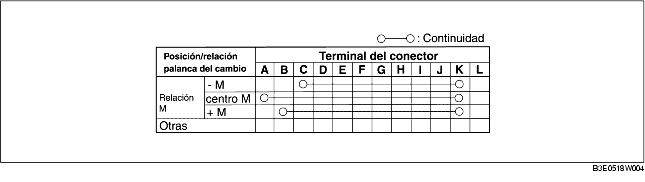

1. Quitar la tapa de la batería. [Véase REMOCION/INSTALACION BATERIA (ZJ, Z6)]. [Véase REMOCION/INSTALACION BATERIA (LF)].
2. Desconectar el cable negativo de la batería.
3. Quitar la consola. (Véase REMOCION/INSTALACION CONSOLA).
4. Desconectar el conector del conjunto de la palanca del cambio.
5. Comprobar la continuidad como se indica en la tabla.
